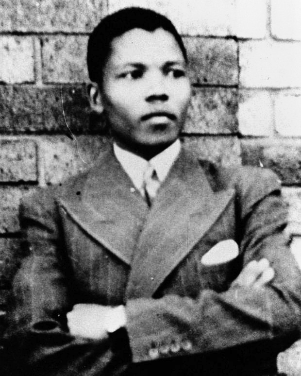

<style>
  hr {
    margin: 80px auto;
  }

  .black-stripe {
    padding-top:0;
    height:1320px;
  }

  .green-stripe {
    background-color: #008000;
    color:white;
    height:1320px;
  }

  .green-stripe .byline {
    color:white;
  }

  .green-stripe a {
    color: white;
  }

  .green-stripe a:hover {
    color: #ddd;
  }

  .yellow-stripe {
    background-color: #FFCC00;
    height:1320px;
  }

  .yellow-stripe .byline {
    color:black;
  }

  .yellow-stripe a {
    color: black;
  }

  .yellow-stripe a:hover {
    color: #333;
  }
</style>
<section class="dark container black-stripe">
  
  <article>
    <h1 style="font-size: 43px;">Nelson Mandela, revolutionary</h1>
    <p>
      Awarded the highest honors from the governments of United States,
      Soviet Union, India, Pakistan, Mexico, and France. Nelson Mandela is a
      Nobel Peace Prize laureate anti-apartheid revolutionary who was
      denounced as a terrorist and imprisoned for 27 years before becoming the
      1<sup>st</sup> President of South Africa in 1994.
    </p>
  </article>
</section>
<section class="container green-stripe">
  <article style="text-shadow:0px 1px 1px black;">
    <p style="margin-bottom:0;">
      &ldquo;I have chosen this course which is more difficult and which entails
      more risk and hardship than sitting in jail. I have had to separate myself
      from my dear wife and children, from my mother and sisters to live as an
      outlaw in my own land. I have had to close my business, to abandon my
      profession, and live in poverty, as many of my people are doing&hellip; I shall
      fight the Government side by side with you, inch by inch, and mile by mile,
      until victory is won.
    </p>
    <p>
      What are you going to do?
    </p>
    <p>
      Will you come along with us,
      or are you going to co-operate with the Government in its efforts to suppress
      the claims and aspirations of your own people? Are you going to remain silent
      and neutral in a matter of life and death to my people, to our people? For my
      own part I have made my choice. I will not leave South Africa, nor will I
      surrender. Only through hardship, sacrifice and militant action can freedom
      be won.
    </p>
    <p>
      The struggle is my life. I will continue fighting for freedom until
      the end of my days.&rdquo;
    </p>
    <p class="byline">
     &ndash; <a target="_blank" href="http://www.anc.org.za/show.php?id=4502">June 1961 Press Release by Mandela</a>
    </p>

    <iframe
      style="margin-top:50px;"
      src="https://embed.theguardian.com/embed/video/world/video/2013/dec/05/nelson-mandela-1964-speech-audio"
      width="700"
      height="393"
      frameborder="0"
      allowfullscreen
      webkitallowfullscreen
      mozallowfullscreen
    ></iframe>
  </article>
</section>
<section class="container yellow-stripe">
  <article>
    &ldquo;Over thirty years ago, while still a student, I learned of Mandela
    and the struggles in this land. It stirred something in me. It woke me up
    to my responsibilities - to others, and to myself - and set me on an
    improbable journey that finds me here today.&rdquo;
    <p class="byline">
      &ndash;
      <a target="_blank" href="https://www.youtube.com/watch?v=SggOsfjsL0c&feature=youtu.be&t=161"
      >Excerpt from President Obama's eulogy for Mandela</a>
    </p>
    <hr style="border-color:rgba(0,0,0,.2);">
  </article>
  <article style="font-size:28px; text-align: center;">
    <a
      target="_blank"
      style="text-align:center; font-size: 28px;"
      href="http://www.amazon.com/Long-Walk-Freedom-Autobiography-Mandela/dp/0316548189"
    ></a>
      <span>
        <a
          target="_blank"
          href="http://www.amazon.com/Long-Walk-Freedom-Autobiography-Mandela/dp/0316548189"
        >Read</a> or
        <a
          target="_blank"
          href="http://www.amazon.com/Long-Walk-Freedom-Autobiography-Mandela/dp/0316548189"
        >listen</a> to his autobiography</span>
    </a>
  </article>
  <article>
    <hr style="border-color:rgba(0,0,0,.2);">
    <div style="width:520px; margin: 0 auto;">
      <a class="twitter-timeline" height="470" href="https://twitter.com/NelsonMandela" data-widget-id="630119161083990016">Tweets by @NelsonMandela</a>
      <script>!function(d,s,id){var js,fjs=d.getElementsByTagName(s)[0],p=/^http:/.test(d.location)?'http':'https';if(!d.getElementById(id)){js=d.createElement(s);js.id=id;js.src=p+"://platform.twitter.com/widgets.js";fjs.parentNode.insertBefore(js,fjs);}}(document,"script","twitter-wjs");</script>
    </div>
  </article>
</section>

<section class="container">
  <nav>
    <a href="../malcolm-x/">
      Malcolm X
    </a>
    <a href="../harvey-milk/">
      Harvey Milk
    </a>
  </nav>
</section>
